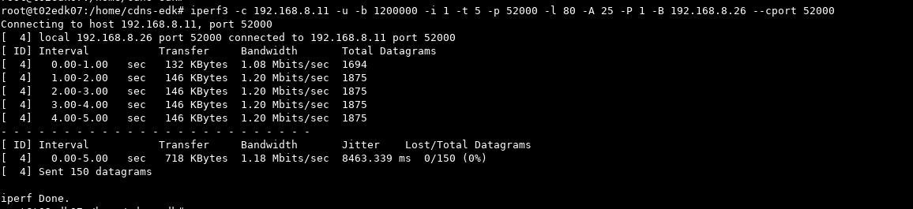
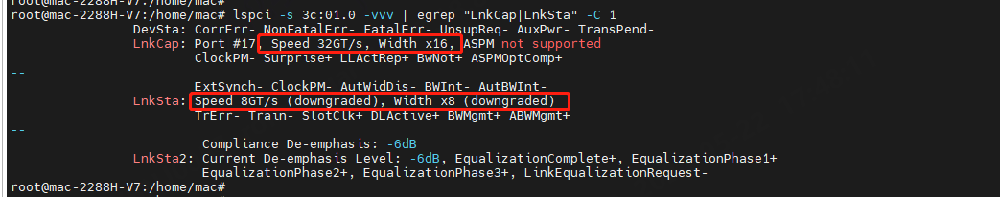

iperf3测试命令
1 | root@xx:# iperf3 --help |
1 | Server or Client: |
iperf3测试命令示例
1 | ##iperf server端(-s 启动server模式；-p 指定server端口号；-A指定绑核；-D后台运行) |
iperf3 结果分析
udp测试结果分析

- 第一列 Interval：测试的时长
- 第二列 Transfer：在 Interval 时长里，传输的数据量
- 第三列 Bitrate：传输速率
- 第四列 Jitter：网络抖动，连续发送数据包时延差值的平均值，越小说明网络质量越好
- 第五列 Lost/Total Datagrams：丢失的数据包与发送的总数据包
tcp测试结果分析
- 第一列 Interval：测试的时长
- 第二列 Transfer：在 Interval 时长里，传输的数据量
- 第三列 Bitrate：传输速率
- 第四列 Retr：报文重传次数
- 第五列 Cwnd：拥塞窗口
性能数据统计
1 | sar -n ALL 1 1000 | egrep "eno2|IFACE" |
- IFACE：本地网卡接口的名称
- rxpck/s：每秒钟接受的数据包
- txpck/s：每秒钟发送的数据包
- rxKB/s：每秒钟接受的数据包大小，单位为KB
- txKB/s：每秒钟发送的数据包大小，单位为KB
- rxcmp/s：每秒钟接受的压缩数据包
- txcmp/s：每秒钟发送的压缩数据包
- rxmcst/s：每秒钟接收的多播数据包
iperf3性能调优
网卡设置
RX队列大小设置
1 | ethtool -g ens6 ##查看队列深度 |
根据需要修改队列深度等信息，例如：修改为8192队列深度实例 (版本路径/usr/share/jmnd/single/auto/xml/interface_module.xml)
1 | <interface type='vhostuser'> |
RX队列数量设置
1 | ethtool -l ens6 ##查看队列数 |
根据需要修改队列数目等信息，例如：修改为32 qp_num (版本路径/usr/share/jmnd/single/auto/config/base_config.json)
offload配置
1 | ethtool -K eth1 tso on |
pcie链路速率
lspci -tv
lspci -s 3c:01.0 -vvv ##确认pcie链路协商Gen5 X16模式

cpu亲核性
查询numa node
lspci -s 47:00.0 -vvv | grep NUMA
lscpu | grep NUMA
pcie MPS & MRRS
cpu设置为高性能模式
1 | cpupower frequency-set -g performance |
协议栈优化
1 | ##修改内核套接字接受缓存区默认的大小 |
XPS绑核
1 | #下指令是将指定net的全队列取消绑定在所有cpu上 |
RPS绑核
rps绑核方式和xps类似，文件名 有所差异：
1 | echo "00000000,00000000,00000001,00000000,00000000,00000000" > /sys/class/net/ens14/queues/rx-0/rps_cpus |
中断绑核
1 | cat /proc/interrupts | grep virtio1 | grep output ##查找中断号，output表示tx队列中断，input表示rx队列中断，config表示配置中断 |
第一列为中断号，后续18列分别对应cpu 0 - cpu 17中断处理个数(查看cpu方式见上) ，最后一列为中断名称(output表示tx队列中断，input表示rx队列中断，config表示配置中断)
1 | echo $cpu_id > /proc/irq/$interrupts/smp_affinity_list ##设置中断绑核 |
RFS配置
1 | echo 32768 > /proc/sys/net/core/rps_sock_flow_entries |